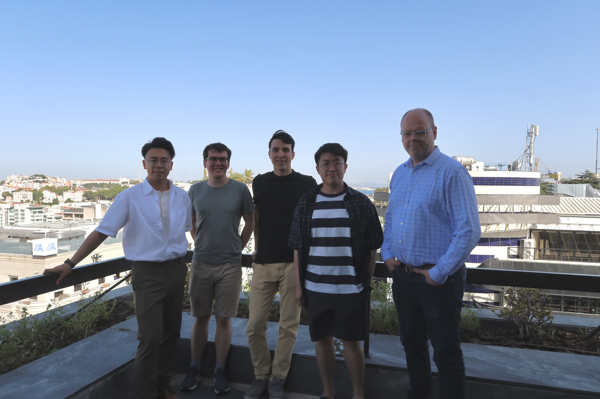

Theory of Evolutionary Computation UoB
School of Computer Science
University of Birmingham
Edgbaston
Birmingham
B15 2TT
United Kingdom

We do fundamental research in the theory of optimisation, particularly evolutionary computation. Our research methodology is based on rigorous mathematical analysis of evolutionary processes, and the application of insights from this analysis to the design of improved optimisation algorithms with provable performance bounds.
We have developed an analytical toolbox which allows us to prove upper and lower bounds on the runtime (computational complexity) of realistic evolutionary algorithms, including
- The level-based theorem (upper bounds)
- The negative drift theorem for populations (lower bounds)
Runtime bounds give insight into how the performance of evolutionary algorithms depends on the structure of optmisation problems and the parameter settings of the algorithm. This insight has aided us in developing better algorithms for challenging optimisation scenarios, such as
- PDCoEA (a population-based co-evolutionary algorithm for adversarial optimisation problems)
- MOSA-EA (a self-adaptive algorithm for single-objective, pseudo-Boolean optimisation)
Our research has been funded by the European Commission, and UKRI/EPSRC through a Turing AI Acceleration Fellowship.